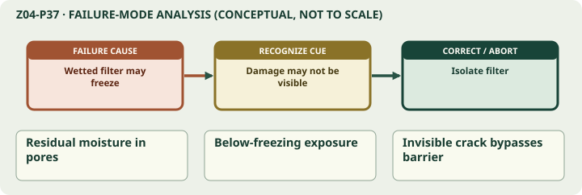

Z04-P37 · Water · New manuscript
Protect wet hollow-fiber and ceramic filters from freeze damage
Prevent invisible ice-expansion damage inside porous filter elements during cold trips and overnight stops.
When it applies · Any outing where temperatures may drop near or below freezing while carrying a previously wetted filter.
Equipment · Sealable dry bag for the filter element, insulated interior pocket or sleeping bag and backup boiling or chemical method.

Actions
- Read the exact model instructions for draining and storage. A cartridge that looks drained can still contain water.[W28]
- Protect the wetted filter against freezing as the manufacturer directs. Maintain a treatment backup for water within its limits.[W28, W02]
- Run the manufacturer's integrity check where specified (such as air-pressure or ceramic gauge checks) only as directed; never assume a visual glance detects internal cracks.[W28, ED]
Failure recognition · Stashing a wet filter in a pack's outer mesh pocket at dusk when temperatures dip below 32°F, silently rupturing hollow fibers.[W28]
Verify · Confirm the filter has never been exposed to freezing temperatures while damp, or switch immediately to boiling.[W28, W02]
Stop or change course · If a wetted filter might have frozen, stop relying on it and follow the model instructions for replacement or an approved integrity check. Use a supported alternate treatment or carried potable water.[W28, W02]
Evidence and editorial notes
- W02 · CDC · How to Make Water Safe in an Emergency (2024-09-19)
- Section: Boil > Steps for boiling water · Conditions: Microbiologically suspect water with acceptable chemical source; portable heat and safe vessel
Support: Clarify cloudy water first. Rolling boil for one minute; above 6,500 feet for three minutes. Cool and cover in sanitized containers.
Limitations: Does not remove dissolved metals, nitrates, fuel, or cyanotoxins. · Conflicting evidence: Older Track B B009 omitted the 6,500 ft threshold; CDC threshold governs.
Editorial note: Require explicit timer verification after rolling boil starts. · Specialist reviewer: Drinking-water safety and public health
Primary source · checked 2026-11-24 - W28 · Sawyer · Water Filtration FAQs (Current manufacturer FAQ)
- Section: Water filtration FAQ > filter freezing · Conditions: Sawyer wet hollow-fiber filters; other models follow their exact manufacturer instructions
Support: Freezing can damage a wetted filter. Sawyer advises replacing a filter suspected of freezing; visual inspection cannot establish its integrity.
Limitations: Do not extrapolate replacement or integrity-testing instructions to other products without their manuals. · Conflicting evidence: None; critical cold-weather filter failure mechanism.
Editorial note: Drives cold-weather filter protection and failure-recognition cards. · Specialist reviewer: Drinking-water treatment and cold-weather operations
Primary source · checked 2026-11-24
Source lineage · CDC backcountry filter maintenance; new manuscript · Classification · New manuscript.